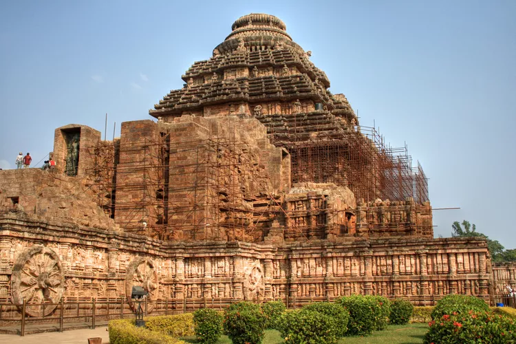

The Ultimate Guide to the Konark Sun temple

The Konark Sun Temple is not only a wondrous UNESCO World Heritage Site.
It's undoubtedly the grandest and best-known sun temple in India, and also one of the country's most popular monuments.
Nearly 2.5 million people visit it per year. The temple's design follows the popular Kalinga school of temple architecture.
However, unlike other temples in Odisha, it has a distinctive chariot shape.
Its stone walls are engraved with thousands of images of deities, people, birds, animals, and mythological creatures.
Location
Konark is part of the Bhubaneshwar-Konark-Puri triangle.
It's located on the coast of Odisha, about 50 minutes east of Puri and 1.5 hours southeast of capital city Bhubaneshwar.
When to Go
The cooler dry months, from November until February, are the best time to go.
Odisha gets extremely hot during the summer months, from March until June.
The monsoon season follows, and it's also humid and uncomfortable then.
Getting There
The temple is open daily from sunrise until sunset.
It's worth getting up early to see the first rays of dawn evocatively illuminate its main entrance and to avoid the crowds.
Opening Hours
The opening time of Konark Sun Temple is 7 AM and it is best to visit the temple during early morning hours to avoid the crowd.
Entry Fees and Information
Tickets cost 40 rupees for Indians and 600 rupees for foreigners.
There's no charge for children under 15 years of age.
Tickets can be purchased at the ticket counter at the entrance to the monument or online.